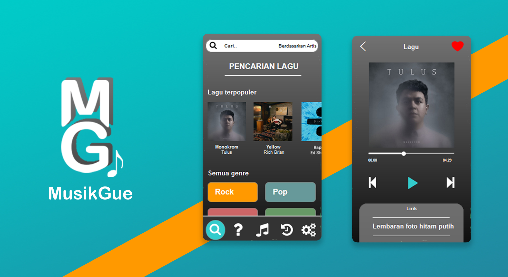
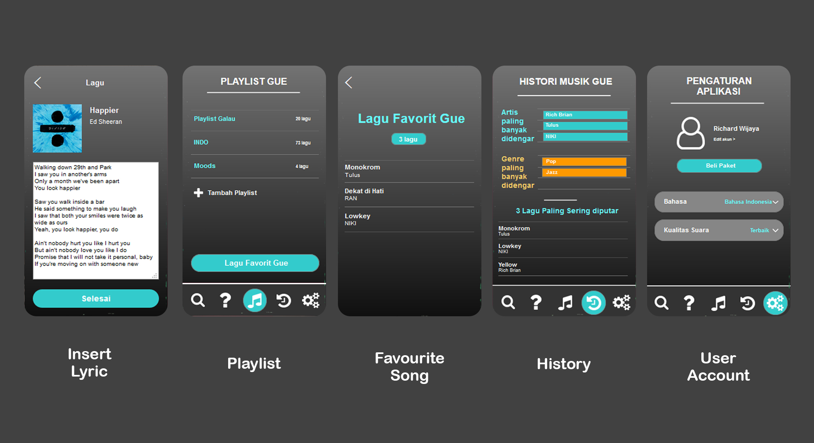

MusikGue

Listen to music anywhere and anytime from all over the world
MusikGue is a mobile music player application that allows users to listen to music for free or paid with ad-free and full features. Users can search for songs from the search feature by title, artist, or popular and save their favorites songs to the Playlist. User can also insert lyrics or change lyrics made by other users for conveniences and experiences for deeper feeling.
